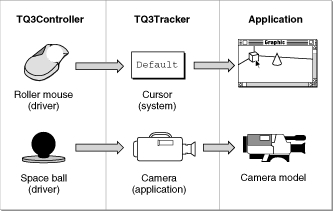

About the QuickDraw 3D Pointing Device Manager
The QuickDraw 3D Pointing Device Manager is a set of functions that you can use to manage three-dimensional pointing devices.The QuickDraw 3D Pointing Device Manager contains several kinds of routines, including routines you can use to
The following sections describe these tasks and the routines you can use to perform them.
- determine what kinds of pointing devices are available on a particular computer
- configure one or more of those devices to control items in a 3D model (such as the position of an object or a camera)
Controllers
In order for a user to interact successfully with the objects in a three-dimensional model, it's necessary for the computer to provide some means of manipulating positions along three independent axes. Most existing computer systems support only two-dimensional input devices, such as mouse pointers or graphics tablets. QuickDraw 3D provides a standard interface between applications and devices that allows users to work with any available 3D pointing devices. In addition, the QuickDraw 3D Pointing Device Manager provides routines that you can use to determine what kinds of 3D pointing devices are available and to assign certain of them to specific uses in your application.A 3D pointing device is any physical device capable of controlling movements or specifying positions in three-dimensional space. QuickDraw 3D represents 3D pointing devices as controller objects (or, more briefly, controllers). A user can attach more than one 3D pointing device to a computer. Accordingly, QuickDraw 3D can support more than one controller at a time. When several 3D pointing devices are present, they can all contribute to the movement of a single user interface element (such as the position of the selected object), or they can control different elements. For example, a particular 3D pointing device can be dedicated to controlling a view's camera, and another 3D pointing device can drive the position of the selected object.
The position and orientation of a single element in your application's user interface are represented by a tracker object (or, more briefly, a tracker). For instance, the position and orientation of a selected object are represented by a tracker, as is any other interface element you've assigned to some controller. Each controller can affect only one tracker, but a tracker can be affected by one or more controllers. Figure 18-1 illustrates a possible arrangement of devices, controllers, and trackers.
Figure 18-1 A sample configuration of input devices, controllers, and trackers

The controller object associated with a particular 3D pointing device is usually created by a device driver, the software that communicates with the device using whatever low-level protocols are appropriate for the device. The device can be connected to the computer through a serial port, via ADB connections, through an expansion card, or by other means. The device driver receives data from the device and passes it to the associated controller. As already indicated, a controller is associated with exactly one tracker. Changes in the position or orientation of the pointing device thereby result in changes in the position or orientation of the associated tracker.All controllers are capable of controlling positions, and some controllers are capable of controlling orientations as well. Pointing devices contain one or more buttons; the associated controller must be capable of reading button states (up or down) from the pointing device and reporting those states to the tracker. Currently, QuickDraw 3D supports up to 32 buttons on a 3D pointing device. More generally, a pointing device may support additional input and output modes as well. For example, it's possible to construct a 3D pointing device that contains a number of dials and alphanumeric displays labeling those dials. The device's controller must then be able to communicate information about dials and labels between the device and an application using that device.
- IMPORTANT
- By default, a controller contributes to the position of the system's cursor. You can, if you wish, reassign a particular controller to control the position or orientation of some other user interface element.
Any piece of information, beyond the standard position, orientation, and buttons, that the user sends to the application by means of an input device is called a controller value. Any piece of information sent from the application to the input device is called a controller channel. A dial position, for example, is a controller value, whereas an alphanumeric label generated by the application is a controller channel.
In general, your application does not need to communicate with controllers directly. As already indicated, controllers are almost always created by their associated device drivers, which read data from the devices and pass it to the associated controller. Moreover, a controller is by default connected to the cursor. Your application needs to access a controller only to assign it to some interface element other than the cursor or to read controller data other than position, orientation, and button states. To get information about other controller values, for instance, you need to call routines that query the controller directly.
QuickDraw 3D maintains a list of all the controllers that are available on a computer. A controller is identified by its signature, which is a string that uniquely identifies the manufacturer and model of the controller. You can search for a controller by signature by calling QuickDraw 3D Pointing Device Manager routines. Once a controller is added to the list of available controllers, it cannot be removed from it, but it can be made inactive. If for some reason a device becomes unavailable, the device driver should mark the controller as inactive. The device might later become available, in which case the driver can reactivate the controller. You should always check that a controller is active before directly accessing a controller from the list of controllers.
- Note
- Because controllers may be shared by multiple applications, you cannot dispose of a controller. Instead, you can decommission the controller by calling
Q3Controller_Decommission. Decommissioning a controller makes it inoperative for any application.
Controller States
When your application is inactive, some other application might use a particular pointing device your application was using. That other application might also reset some of the controller channels. As a result, you need to keep track of the current controller state across the times your application is inactive. A controller state object (or, more briefly, a controller state) consists mainly of the current channels and other settings of a controller. When your application is about to be inactivated, you should call the functionQ3ControllerState_SaveAndResetto save the current controller state. Then, when your application is reactivated, you should callQ3ControllerState_Restoreto restore the proper controller state.Trackers
A tracker is a kind of QuickDraw 3D object that controls the position, orientation, and button state of a specific element in your application's user interface. QuickDraw 3D always provides a tracker that controls the location and orientation of the system cursor. You can create additional trackers and attach them to other visible elements of your application's user interface. As suggested earlier, you can attach a 3D pointing device to a view's camera and then let users control the camera's position and orientation using the device. If the device has one or more buttons, you could let users turn the lights on and off using those buttons.All the controllers currently reporting data to a particular tracker, whether absolute or relative, jointly contribute to the button states of the tracker. The button state of a tracker button of a particular index is the logical OR of the button states of all controller buttons of that index.
- Note
- This is not necessarily a good human interface for turning lights on and off; it is intended only for illustrative purposes.
You can determine that a tracker has moved in one or both of two ways. You can poll for a tracker serial number, which changes every time the coordinates of the tracker are updated by a controller. Or, you can install a tracker notify function that is called whenever the coordinates of a tracker change by more than a specified amount (the tracker thresholds). Your tracker notify function can respond itself to the change, or it can just wake up your application. These two techniques can also be combined.